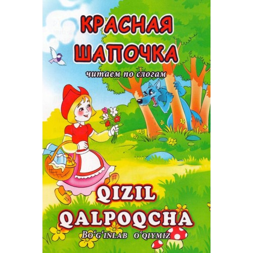

— Men ham buvingni ko'rib kelaman. Men manavi yo'ldan boraman, sen
bo'lsang, anavi yo'ldan bor. Ko'ramiz, kim oldin borarkin. Shunday
deb, Bo'ri eng yaqin yo'ldan g'izillab chopib ketibdi. Qizil Shapkacha
bo'lsa eng uzoq yo'ldan yurib ketibdi. U yo'lma-yo'l to'xtab, gullar
teribdi, guldasta yasabdi. Qizil Shapkacha hali tegirmon oldiga ham
yetmagan ekan, Bo'ri kampirning uyiga yetib, eshikni taqillatibdi: —
Taq-taq! — Kim? — deb so'rabdi kampir.
- Men, - nevarangiz qizil Shapkachaman, — deb javob beribdi Bo'ri ovozini ingichka qilib. — Siznikiga mehmon bo'lib keldim, somsa bilan kuvachada yog' keltirdim. Kampir bu vaqt to'shakda kasal bo'lib yotgan ekan. U chindan ham qizil Shapkacha kelibdi, deb o'ylab: — Jonginam, ipni tort, eshik ochiladi! — debdi. Bo'ri ipni tortibdi, eshik ochilibdi.Bo'ri chopib borib, kampirni bir yamlab yutib yuboribdi. Keyin eshikni yopib, kampirning o'rniga yotib, burkanib olibdi-da, qizil Shapkachani kuta boshlabdi. Tezda qizil Shapkacha kelib, eshikni taqillatibdi:
- Men, - nevarangiz qizil Shapkachaman, — deb javob beribdi Bo'ri ovozini ingichka qilib. — Siznikiga mehmon bo'lib keldim, somsa bilan kuvachada yog' keltirdim. Kampir bu vaqt to'shakda kasal bo'lib yotgan ekan. U chindan ham qizil Shapkacha kelibdi, deb o'ylab: — Jonginam, ipni tort, eshik ochiladi! — debdi. Bo'ri ipni tortibdi, eshik ochilibdi.Bo'ri chopib borib, kampirni bir yamlab yutib yuboribdi. Keyin eshikni yopib, kampirning o'rniga yotib, burkanib olibdi-da, qizil Shapkachani kuta boshlabdi. Tezda qizil Shapkacha kelib, eshikni taqillatibdi:
Audio variantini tinglash
Sahifa 3
Asosiy betga qaytish
Biz bilan bog'lanish 📞